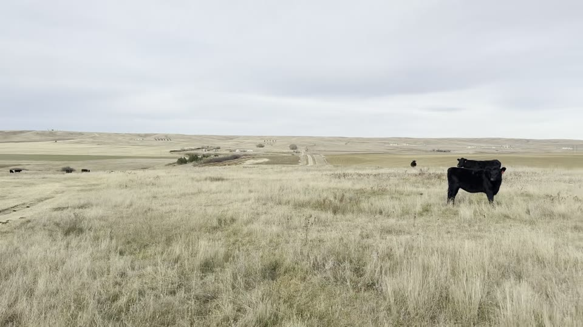

Controls
Site Visibility Map
Loading terrain...
Select a home or click the map.
Analysis
View
Terrain and modeled structures
255° WSW
Export image
Select a location.
Visibility model loads with the terrain raster
Terrain profile
Eye to DH-2 roof center · axes scaled separately
No data yet
Export image
Profile appears after terrain loads.
Includes Earth curvature and approximate refraction
Driving view
Playback speed
55 mph
Visualization (2.5×)
View appearance
Daytime
Nighttime
Expand
Close
Selected road route
▲ You ● Site
N
▲
Left
Center
Right
Replay
Reverse direction
Save video
Route progress
0.00 / 0.00 mi
Site may be visible
Not Visible or outside view
Not evaluated
Explore site video
Close

Frame near 2 seconds
Video frame